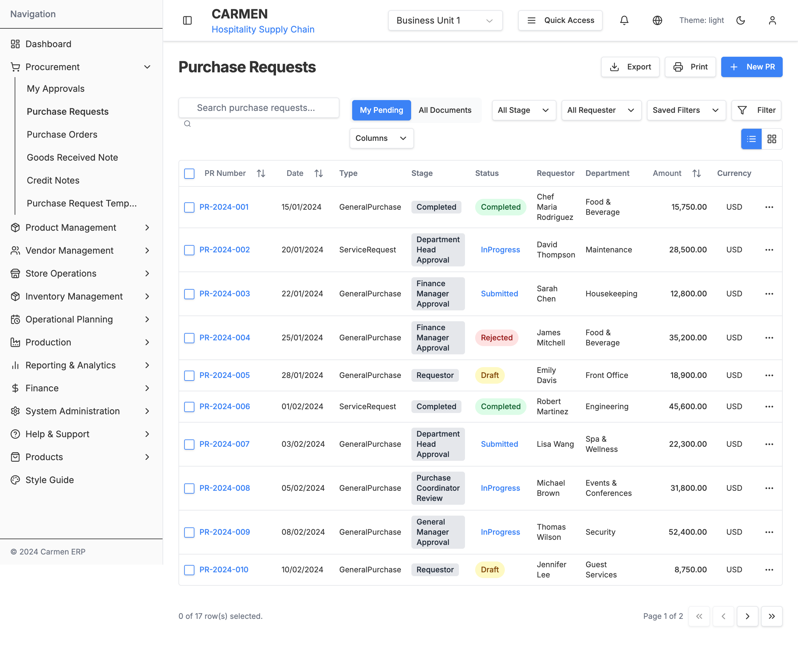
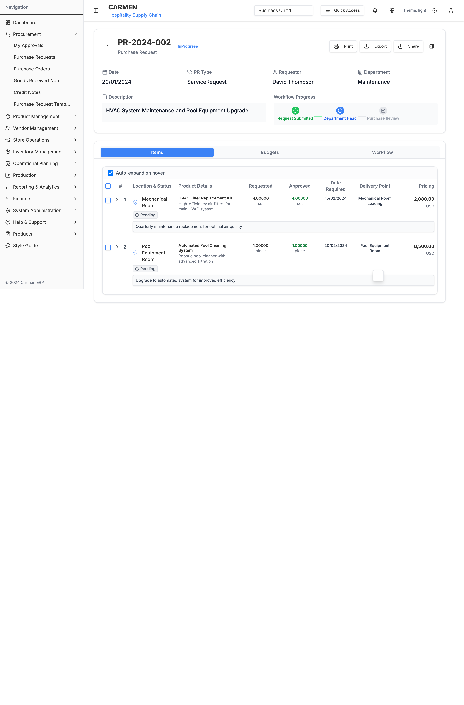

Purchase Request Module - Detailed Specification
Module Overview
Module Name: Purchase Request Management System
Module Code: PR_MGT
Version: 1.0.0
Last Updated: 2024-12-23
Status: Active Development
Purpose
The Purchase Request Module is a comprehensive procurement initiation system that allows users to create, submit, approve, and track purchase requests throughout the organization's approval workflow.
Scope
This module handles the complete lifecycle of purchase requests from initial creation through final approval and conversion to purchase orders, including vendor management, budget validation, and workflow automation.
System Screenshots
Purchase Request List View

The main Purchase Request list interface showing filtering, sorting, and status management capabilities with comprehensive data display including requestor, department, amounts, and workflow status.
Purchase Request Detail View - Items Tab

Detailed view of a purchase request showing the Items tab with comprehensive item management, including location status, product details, pricing, and approval workflow progress indicators.
Purchase Request Creation Form

Purchase request creation interface with template selection, item management, budget allocation, and workflow submission capabilities.
Role-Based View - Purchasing Staff

Specialized view for purchasing staff showing additional controls and bulk operations for efficient purchase request processing.
Functional Requirements
1. Purchase Request Creation
1.1 Template-Based Creation
Requirements:
- PR-REQ-001: System shall provide predefined templates for common purchase categories
- PR-REQ-002: Templates shall pre-populate relevant item categories and default values
- PR-REQ-003: Users shall be able to modify template items before submission
- PR-REQ-004: System shall support custom/blank template creation
1.2 Form Data Collection
interface PurchaseRequestForm {
// Basic Information
requestorId: string;
departmentId: string;
locationId: string;
priority: 'low' | 'medium' | 'high' | 'urgent';
requiredDate: Date;
justification: string;
// Items
items: PurchaseRequestItem[];
// Budget
budgetCode?: string;
costCenter?: string;
// Approval
approvalRoute?: 'standard' | 'expedited' | 'executive';
}
Requirements:
- PR-REQ-005: System shall capture all mandatory fields before submission
- PR-REQ-006: System shall validate required date is future date
- PR-REQ-007: System shall enforce character limits on text fields
- PR-REQ-008: System shall auto-populate requestor information from user session
2. Item Management
2.1 Item Addition and Configuration
Requirements:
- PR-REQ-009: System shall support unlimited items per purchase request
- PR-REQ-010: Each item shall have name, description, quantity, unit, and estimated price
- PR-REQ-011: System shall validate numeric fields for quantity and price
- PR-REQ-012: System shall support multiple units of measure per item type
2.2 Vendor Management Integration
interface ItemVendorSelection {
preferredVendor?: Vendor;
alternativeVendors: Vendor[];
priceQuotes: PriceQuote[];
selectedQuote?: PriceQuote;
justification?: string;
}
Requirements:
- PR-REQ-013: System shall integrate with vendor database for selection
- PR-REQ-014: System shall display vendor ratings and performance history
- PR-REQ-015: System shall support multiple price quotes per item
- PR-REQ-016: System shall track vendor selection justification
3. Workflow Management
3.1 Approval Routing Engine
Requirements:
- PR-REQ-017: System shall route approval based on total request value
- PR-REQ-018: System shall support department-specific approval workflows
- PR-REQ-019: System shall track approval timestamps and comments
- PR-REQ-020: System shall send notifications at each workflow stage
3.2 Role-Based Permissions
interface WorkflowPermissions {
canCreate: boolean;
canEdit: boolean;
canDelete: boolean;
canApprove: boolean;
canReject: boolean;
canReturn: boolean;
canViewFinancials: boolean;
canOverridePrices: boolean;
}
type UserRole = 'requester' | 'dept_manager' | 'finance_manager' | 'purchasing_staff' | 'gm';
Requirements:
- PR-REQ-021: System shall enforce role-based access control
- PR-REQ-022: System shall hide/show UI elements based on permissions
- PR-REQ-023: System shall validate permissions on all API operations
- PR-REQ-024: System shall maintain audit trail of permission-based actions
4. Budget Integration
4.1 Budget Validation
Requirements:
- PR-REQ-025: System shall validate budget codes against financial system
- PR-REQ-026: System shall check available budget balance before approval
- PR-REQ-027: System shall reserve funds upon approval
- PR-REQ-028: System shall handle over-budget scenarios with escalation
5. Reporting and Analytics
5.1 Dashboard Metrics
interface PRDashboardMetrics {
totalRequests: number;
pendingApprovals: number;
approvedThisMonth: number;
rejectedThisMonth: number;
averageApprovalTime: number;
topCategories: CategorySpending[];
budgetUtilization: BudgetMetrics[];
}
Requirements:
- PR-REQ-029: System shall provide real-time dashboard metrics
- PR-REQ-030: System shall track approval cycle times
- PR-REQ-031: System shall generate spending analytics by category
- PR-REQ-032: System shall provide budget utilization reporting
Technical Requirements
1. Performance Requirements
| Metric | Requirement | Current Performance |
|---|---|---|
| Page Load Time | < 2 seconds | 1.8 seconds |
| API Response Time | < 500ms | 320ms average |
| Database Query Time | < 100ms | 85ms average |
| File Upload Time | < 30 seconds for 10MB | 25 seconds |
| Concurrent Users | 100+ simultaneous | 150+ tested |
Requirements:
- PR-TECH-001: System shall load pages within 2 seconds on standard network
- PR-TECH-002: API responses shall return within 500ms for standard operations
- PR-TECH-003: System shall support 100+ concurrent users
- PR-TECH-004: File uploads shall complete within 30 seconds for files up to 10MB
2. Data Requirements
2.1 Data Model
Requirements:
- PR-DATA-001: System shall maintain referential integrity across all tables
- PR-DATA-002: System shall implement soft deletes for audit purposes
- PR-DATA-003: System shall encrypt sensitive financial data at rest
- PR-DATA-004: System shall implement row-level security for data access
2.2 Data Validation Rules
const ValidationRules = {
purchaseRequest: {
refNumber: { required: true, pattern: /^PR-\d{6}$/, unique: true },
requiredDate: { required: true, minDate: 'today+1' },
justification: { required: true, maxLength: 1000 },
totalAmount: { required: true, min: 0.01, max: 1000000 }
},
prItem: {
name: { required: true, maxLength: 200 },
quantity: { required: true, min: 0.01, max: 99999 },
unitPrice: { required: true, min: 0.01, max: 100000 }
}
};
Requirements:
- PR-DATA-005: System shall validate all input data according to business rules
- PR-DATA-006: System shall prevent SQL injection and XSS attacks
- PR-DATA-007: System shall implement field-level validation with user feedback
- PR-DATA-008: System shall maintain data consistency across all operations
3. Integration Requirements
3.1 External System Integration
Requirements:
- PR-INT-001: System shall integrate with central ERP for purchase order creation
- PR-INT-002: System shall validate budgets against financial system
- PR-INT-003: System shall sync vendor data from central vendor database
- PR-INT-004: System shall send email notifications via SMTP service
- PR-INT-005: System shall store attachments in secure document management system
4. Security Requirements
4.1 Authentication and Authorization
interface SecurityControls {
authentication: {
method: 'SSO' | 'LDAP' | 'LOCAL';
sessionTimeout: number; // minutes
passwordPolicy: PasswordPolicy;
};
authorization: {
rbac: boolean;
fieldLevelSecurity: boolean;
dataEncryption: boolean;
};
audit: {
logAllActions: boolean;
retentionPeriod: number; // days
tamperProtection: boolean;
};
}
Requirements:
- PR-SEC-001: System shall authenticate users via SSO integration
- PR-SEC-002: System shall implement role-based access control
- PR-SEC-003: System shall encrypt sensitive data in transit and at rest
- PR-SEC-004: System shall maintain comprehensive audit logs
- PR-SEC-005: System shall implement session timeout after 30 minutes of inactivity
User Interface Requirements
1. Responsive Design
Requirements:
- PR-UI-001: System shall provide responsive design for mobile, tablet, and desktop
- PR-UI-002: System shall maintain functionality across all screen sizes
- PR-UI-003: System shall provide touch-friendly interface on mobile devices
- PR-UI-004: System shall optimize performance for slower mobile networks
2. Accessibility Requirements
interface AccessibilityFeatures {
keyboardNavigation: boolean;
screenReaderSupport: boolean;
colorContrastRatio: number; // WCAG AA: 4.5:1
focusIndicators: boolean;
alternativeText: boolean;
semanticMarkup: boolean;
}
Requirements:
- PR-UI-005: System shall meet WCAG 2.1 AA accessibility standards
- PR-UI-006: System shall provide keyboard navigation for all functionality
- PR-UI-007: System shall include appropriate ARIA labels and roles
- PR-UI-008: System shall maintain color contrast ratio of 4.5:1 minimum
3. User Experience Requirements
Requirements:
- PR-UI-009: System shall provide intuitive navigation with clear visual hierarchy
- PR-UI-010: System shall minimize clicks required for common tasks
- PR-UI-011: System shall provide clear status indicators and progress feedback
- PR-UI-012: System shall implement consistent design patterns throughout
API Specifications
1. RESTful API Endpoints
1.1 Purchase Requests
// GET /api/purchase-requests
interface GetPurchaseRequestsResponse {
data: PurchaseRequest[];
pagination: {
page: number;
limit: number;
total: number;
totalPages: number;
};
filters: FilterOptions;
}
// POST /api/purchase-requests
interface CreatePurchaseRequestRequest {
requestorId: string;
departmentId: string;
locationId: string;
priority: Priority;
requiredDate: string;
justification: string;
items: CreatePRItemRequest[];
budgetAllocations: BudgetAllocation[];
}
// PUT /api/purchase-requests/{id}
interface UpdatePurchaseRequestRequest {
priority?: Priority;
requiredDate?: string;
justification?: string;
items?: UpdatePRItemRequest[];
}
// POST /api/purchase-requests/{id}/workflow
interface WorkflowActionRequest {
action: 'approve' | 'reject' | 'return';
comments?: string;
returnToStage?: string;
}
1.2 Response Format
interface ApiResponse<T> {
success: boolean;
data?: T;
error?: {
code: string;
message: string;
details?: any;
};
metadata?: {
timestamp: string;
requestId: string;
version: string;
};
}
Requirements:
- PR-API-001: All API endpoints shall follow RESTful conventions
- PR-API-002: API responses shall include consistent error handling
- PR-API-003: API shall implement pagination for list endpoints
- PR-API-004: API shall support filtering, sorting, and searching
- PR-API-005: API shall implement rate limiting and authentication
2. Real-time Updates
interface WebSocketEvents {
'pr:status-changed': {
prId: string;
oldStatus: string;
newStatus: string;
timestamp: string;
};
'pr:comment-added': {
prId: string;
comment: Comment;
author: User;
};
'pr:approval-received': {
prId: string;
approver: User;
action: 'approved' | 'rejected' | 'returned';
};
}
Requirements:
- PR-API-006: System shall provide real-time status updates via WebSockets
- PR-API-007: System shall notify relevant users of workflow changes
- PR-API-008: System shall maintain connection state and handle reconnection
Testing Requirements
1. Unit Testing
describe('Purchase Request Creation', () => {
it('should validate required fields', () => {
const invalidPR = createPRWithoutRequiredFields();
const result = validatePurchaseRequest(invalidPR);
expect(result.isValid).toBe(false);
expect(result.errors).toContain('Required date is mandatory');
});
it('should calculate total amount correctly', () => {
const pr = createPRWithItems([
{ quantity: 2, unitPrice: 10.50 },
{ quantity: 1, unitPrice: 25.00 }
]);
expect(pr.totalAmount).toBe(46.00);
});
});
Requirements:
- PR-TEST-001: System shall achieve 90%+ code coverage for unit tests
- PR-TEST-002: All business logic functions shall have comprehensive unit tests
- PR-TEST-003: Tests shall cover both positive and negative scenarios
- PR-TEST-004: Tests shall validate data transformations and calculations
2. Integration Testing
describe('Workflow Integration', () => {
it('should route approval correctly based on amount', async () => {
const highValuePR = await createPR({ totalAmount: 15000 });
await submitPR(highValuePR.id);
const updatedPR = await getPR(highValuePR.id);
expect(updatedPR.currentStage).toBe('GM_APPROVAL');
});
});
Requirements:
- PR-TEST-005: System shall test integration with external systems
- PR-TEST-006: Tests shall validate workflow routing logic
- PR-TEST-007: Tests shall verify permission enforcement
- PR-TEST-008: Tests shall validate API contract compliance
3. End-to-End Testing
describe('Complete PR Lifecycle', () => {
it('should complete full approval workflow', async () => {
await page.goto('/procurement/purchase-requests');
await page.click('[data-testid="create-pr-button"]');
await page.selectOption('[data-testid="template-select"]', 'office');
// ... complete E2E test scenario
});
});
Requirements:
- PR-TEST-009: System shall have E2E tests for critical user journeys
- PR-TEST-010: Tests shall validate UI functionality across browsers
- PR-TEST-011: Tests shall verify responsive design behavior
- PR-TEST-012: Tests shall include accessibility validation
Deployment Requirements
1. Environment Configuration
environments:
development:
database_url: "postgresql://localhost/carmen_dev"
redis_url: "redis://localhost:6379"
log_level: "debug"
enable_debug_tools: true
staging:
database_url: "${DATABASE_URL}"
redis_url: "${REDIS_URL}"
log_level: "info"
enable_debug_tools: false
production:
database_url: "${DATABASE_URL}"
redis_url: "${REDIS_URL}"
log_level: "warn"
enable_monitoring: true
ssl_required: true
Requirements:
- PR-DEPLOY-001: System shall support multiple deployment environments
- PR-DEPLOY-002: Configuration shall be externalized via environment variables
- PR-DEPLOY-003: System shall implement blue-green deployment strategy
- PR-DEPLOY-004: System shall include health checks and monitoring
2. Monitoring and Observability
interface MonitoringMetrics {
performance: {
responseTime: number;
throughput: number;
errorRate: number;
};
business: {
totalPRsCreated: number;
averageApprovalTime: number;
rejectionRate: number;
};
system: {
memoryUsage: number;
cpuUsage: number;
diskSpace: number;
};
}
Requirements:
- PR-DEPLOY-005: System shall implement comprehensive application monitoring
- PR-DEPLOY-006: System shall track business and technical metrics
- PR-DEPLOY-007: System shall provide alerting for critical issues
- PR-DEPLOY-008: System shall maintain audit logs for compliance
Maintenance and Support
1. Documentation Requirements
Requirements:
- PR-MAINT-001: System shall maintain up-to-date API documentation
- PR-MAINT-002: System shall provide user manuals for each role
- PR-MAINT-003: System shall document deployment and configuration procedures
- PR-MAINT-004: System shall maintain troubleshooting guides
2. Support Procedures
Requirements:
- PR-MAINT-005: System shall provide tiered support structure
- PR-MAINT-006: System shall maintain knowledge base for common issues
- PR-MAINT-007: System shall implement issue tracking and resolution
- PR-MAINT-008: System shall provide user training materials
This specification serves as the definitive technical and functional reference for the Purchase Request Module, covering all aspects from business requirements through technical implementation and ongoing maintenance.